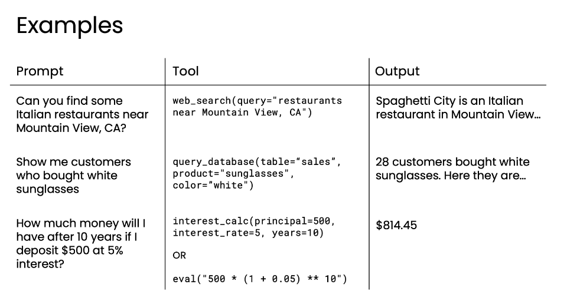

A tool is a function exposed to the model
The model receives descriptions of available tools and decides whether one is relevant. It produces a structured request containing a tool name and arguments. The application—not the language model—runs the function.

{kind=link}
Tools extend a workflow with current data, database access, calculations, search, email, calendars, and other operations represented by code.
The tool-use loop alternates model decisions and execution
- 01RequestUser states the task
- 02Select + bindModel names a tool and arguments
- 03ExecuteApplication runs the function
- 04Return resultOutput joins the history
- 05Answer / continueModel responds or requests another tool
A returned value can supply the context or argument needed by the next tool call.
Manual orchestration
model(messages, tools) -> tool_request | answerexecute(tool_request.name, tool_request.args) -> resultmessages += tool_resultrepeat until answer or turn_limitThe application owns execution, history updates, and the stopping condition.
The schema tells the model how to request the function
The first lab shows both automatic and manual tool handling with AISuite. A Python function and its docstring can be converted into a schema; the manual version makes the contract visible.
Parameterized tool contract
get_current_time(timezone: IANAString) -> HH:MM:SSName:get_current_time· Description: returns current time for the given timezone · Parameters: required stringtimezone, such asAmerica/New_YorkorPacific/Auckland.
Name
Identifies the function that application code can execute.
Description
Explains what the tool does so the model can decide when it fits.
Parameters
Describe required arguments, types, and useful details such as a timezone format.
Turn limit
max_turns bounds the automatic tool exchange in the AISuite lab.
- AutoPass the function in
tools. AISuite creates the description, manages calls, executes locally, and feeds results back. - ManualWrite the schema yourself. Inspect
tool_calls, parse arguments, run the function, append the tool result, then ask the model to continue.
Multiple tools turn one request into an ordered workflow
The functions lab expands from current time to weather lookup, text-file writing, and QR-code generation. The model selects among the available tools and infers arguments from the prompt. When one result is needed by another call, it orders the calls by dependency.
In the email lab, the workflow searches for unread messages from the boss, marks them as read, and sends a reply. A separate experiment removes delete_email from the registered list: the model can discuss deletion but cannot perform it until that tool is made available.
Code execution replaces a long menu of narrow functions
A calculator with separate add, subtract, multiply, and divide tools still cannot handle a new operation unless another function is added. The code-execution lesson instead asks the model to write Python inside execution tags, extracts the code, runs it, and returns the result.

{kind=link}
Code-execution boundary
generate_code(request) -> tagged_pythonexecute_in_sandbox(tagged_python) -> {stdout, error}respond(execution_result) -> answer
- WriteGenerate code for the task. The output is wrapped in markers such as
<execute_python>. - RunExtract and execute. The application captures output or an error.
- ReturnFeed the result back. The model formats the answer or revises failed code from the error message.
- IsolateUse a sandbox. The lesson warns that generated code can delete files or expose data when executed directly.
MCP standardizes connections to tools and data
Without a shared protocol, each application must build its own wrapper for every service. The lesson presents MCP as a client–server pattern: applications act as clients, while servers expose operations or data from services such as repositories, drives, databases, or messaging systems.
Separate wrappers
m apps × n tools
Every application repeats integration work for every service.
Shared protocol
m clients + n servers
Applications connect to reusable servers through the same interface.
The course demonstration uses a GitHub MCP server to fetch a README and list pull requests; the returned data becomes context for a concise model response.
Recall before you move on
Self-check
What does AISuite derive from a Python function?
It can use the function name, docstring, and parameter information to build the tool description presented to the model.
Why must weather be fetched before writing a weather note?
The writing call needs the weather result as its content, so the first tool output is an input to the second call.
What problem does MCP address?
It reduces repeated custom integrations by giving applications a common client–server interface for tools and data sources.
Course evidence + image attribution
Original English summary based on the local Module 3 course artifacts and the Datawhale China Module 3 reference lessons. The two selected lesson images are reproduced from pinned commit a93ab1d with source links in their captions. The repository contains an Apache-2.0 LICENSE while its README names CC BY-NC-SA 4.0; attribution is preserved and this site does not claim image ownership.